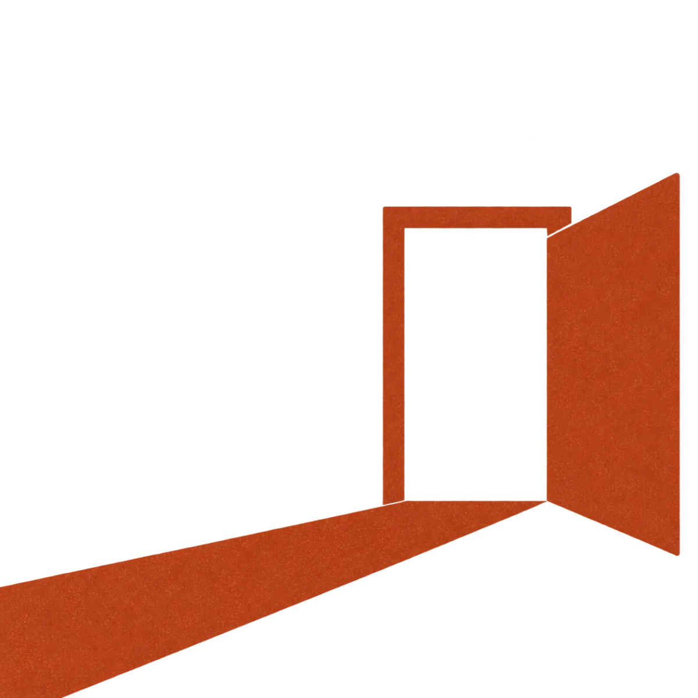

Rádio independente
Música que sai fora.
Na emissão
A ligar…
Programação
A carregar a programação…
Entre frequências.
Uma seleção guiada pela curiosidade, do jazz e do soul aos graves do dub e do grime.
24 horas por dia. Sem publicidade.
Rádio independente
Música que sai fora.

A carregar a programação…
Uma seleção guiada pela curiosidade, do jazz e do soul aos graves do dub e do grime.
24 horas por dia. Sem publicidade.